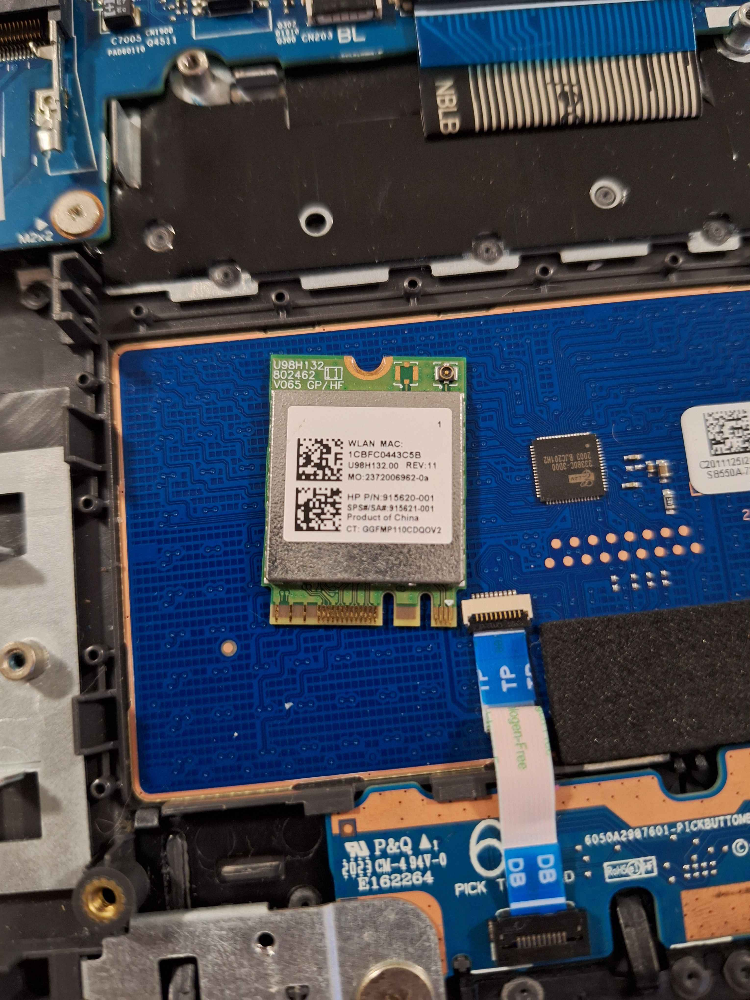

Other Components

My experience of IT support is mainly focused on helping people with their computer problems, whether it be software or hardware related. I have experience troubleshooting and resolving issues with various operating systems, applications and devices.
I've started to be interesting in IT support of my old HP laptop, which I used for years and had a lot of problems with it where I can't fix. After I got my new laptop, I started to learn more about IT support, of tearing apart the old laptop carefully and seeing the insides of it, and how it works. I also learned about the different components of a computer and how they interact with each other.


Overall, my experience in IT support is very low, as I take apart my old technology that doesn't work and see how it works.